Introduction - CNG FUEL SYSTEM
- Path
- Descriptions > 10 ENGINE > 1058 CNG FUEL SYSTEM > Introduction - CNG FUEL SYSTEM
- Kind
- system description
- Applies to
- all engines; all production periods; only with equipment: BIPOWER
- Interactive page
- https://sloeber94.github.io/elrnDB-fDbl/en/#/2585400
Applies to: all engines; all production periods; only with equipment: BIPOWER
The dual fuel system consists of a Magneti Marelli IAW 4AF.G1 system for petrol operation and a Metatron METAFUEL 6A0 for methane operation. The two control systems are connected via a high-speed CAN line.
The Magneti Marelli IAW 4AF.G1 system belongs to the integrated system category with:
- inductive discharge digital electronic ignition
- distributorless
- sequential, phased electronic injection (1-3-4-2).
The Metatron METAFUEL 6A0 system belongs to the integrated system category with:
- sequential, phased electronic injection (1-3-4-2).
The METAFUEL system is transparent to the basic system in all components and does not alter the functions of the basic system under any service conditions.
The two control units share certain system elements. The sharing is transparent to the base system.
The list of components shared between the two systems via parallel connections is as follows:
- pressure sensor in the intake manifold;
- throttle position sensor;
- engine rpm sensor;
- engine timing sensor
- Lambda sensor upstream of catalyzer
The list of additional components for the methane system is as follows:
- METAFUEL 6A0 CNG injection electronic unit;
- methane pressure sensor on high pressure line;
- relay for CNG cut-off solenoids on cylinders;
- CNG cut-off solenoids on cylinders;
- solenoid and pressure reducer;
- CNG/petrol changeover switch with integrated residual pressure indicator (SEDIMO);
- methane injectors with activation relay;
- petrol pump cut-off relay.
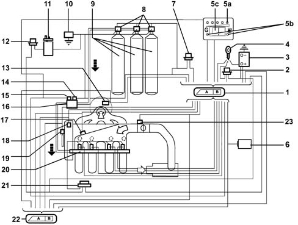
1 - Methane engine management control unit 2 - Injection system relay 3 - Battery 4 - Ignition switch 5A - CNG residual pressure indicator (SEDIMO) 5B - Two LEDs for 'petrol mode' (yello-amber LED) and 'gas mode' (green LED) (SEDIMO) 5C - Petrol or methane operating mode selector (SEDIMO) 6 - Body Computer (diagnostic socket and Fiat CODE signal) 7 - Methane solenoid control relay (on cylinders and on pressure adapter) 8 - Solenoids on cylinders (three solenoids for the Doblò Cargo version, two solenoids for the Doblò version) 9 - Methane cylinders (three cylinders for the Doblò Cargo version, two cylinders for the Doblò version) 10 - Inertia switch 11 - Petrol pump 12 - Petrol pump cut-off relay 13 - Lambda sensor upstream of catalyzer 14 - Solenoid on pressure adapter 15 - Methane pressure sensor 16 - Cut-off solenoid on methane pressure reducer 17 - Pressure and air temperature sensor 18 - Engine timing sensor 19 - Engine rpm and TDC sensor 20 - Methane supply manifold with injectors 21 - Injector supply relay 22 - Petrol engine management control unit 23 - Throttle valve position sensor
Applies to: all engines; all production periods; only with equipment: BIPOWER
OPERATION
The system is configured to normally run on methane.
It is possible to switch from methane to petrol:
- upon a manual control from the user, via the switching button located in the passenger compartment;
- automatically through the engine management electronic control unit if the methane in the tank has run out (pressure in the cylinder below 11 bar) or in recovery conditions when methane operation is not advisable.
The engine is always started on petrol (to keep this fuel system working), with automatic changeover to methane after a few seconds (provided that the operating selector is set to methane).
The operating mode is indicated by two LEDs present on the SEDIMO component (mode selector/pressure indicator). These LEDs, irrespective of the position of the operating mode selector, indicate: green LED on (methane operatioin); yellow-amber LED on (petrol operation).
Both electronic units are joined by a CAN communication line that is used to exchange data, commands and other information for correct management of both control units.
The METATRON 6A0 control unit essentially manages the following functions:
- Petrol operation
- Methane operation
- Engine Signal Panel Management
- Ignition management
- Injection management
- Idle speed management
- System self-adaption
- Starting
- Acceleration and deceleration.
- Operation during cut-off
- Operation under full load conditions
- Protection against excess rpm
- Barometric correction
- Fuel vapour recovery
- Control of combustion gas - Preconverter lambda sensor
- Air conditioning compressor connection
- Residual fuel pressure indicator
- Switching between both operating modes (petrol and methane)
- Connection with Body Computer for Fiat CODE signal function
- System self-test
- Fuel pump control
- Methane cut-off solenoids control
- Methane injectors control
Applies to: all engines; all production periods; only with equipment: BIPOWER
DIAGRAM OF INPUT/OUTPUT INFORMATION TO/FROM THE CONTROL UNIT
Communication between the petrol engine control unit and the methane engine control unit takes place via the CAN line.
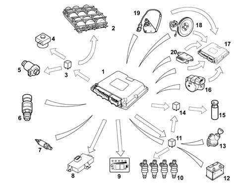
1 - Methane engine management control unit 2 - Methane cylinders (three cylinders for the Doblò Cargo version, two cylinders for the Doblò version) 3 - CNG pump control relay and CNG solenoids (on tank and pressure regulator) 4 - CNG cut-off solenoid on pressure regulator 5 - CNG cut-of solenoids on cylinders 6 - CNG pressure sensor on pressure regulator 7 - Lambda sensor upstream of the catalyzer 8 - Body Computer (tester connection and Fiat CODE signal) 9 - Petrol or CNG operating mode selector with integrated operating mode indicator and pressure indicator 10 - CNG fuel injectors 11 - CNG injector supply relay 12 - Battery 13 - Ignition switch 14 - Petrol pump cut-off relay 15 - Petrol pump 16 - Throttle valve position sensor 17 - Petrol engine control unit 18 - Rpm and TDC sensor 19 - Engine timing sensor 20 - Air pressure sensor
Applies to: all engines; all production periods; only with equipment: BIPOWER
PETROL OPERATION
In this operating mode, system functions are the same as for the basic system.
The performance of the Magneti Marelli 4AF.G1 basic electronic control unit is unmodified and the system management strategies are as for the basic version.
The specific parts of the methane system do not interfere with the basic system in any way.
Applies to: all engines; all production periods; only with equipment: BIPOWER
METHANE OPERATION
The engine runs on methane after always being started up on petrol (naturally with the selector set to methane mode before starting). The petrol pump is consequently not supplied during CNG operation, except for starting, for a period of a few seconds, during CNG injection activation, in order to diagnose the relevant deactivation relay. The METAFUEL 6A0 manages phased sequential CNG injection, activation of the CNG cut-off solenoids and fuel pump deactivation. All other engine control functions, including the ignition advance, are left to the base unit. The injection is implemented directly by controlling the specific methane system injectors. The ignition advance is adjusted by sending the basic electronic unit the advance change to be added to that applied during petrol operation. This communication takes place via the CAN line present between the two control units.
Commands to the petrol injectors, diagnosis and the fuel self-learning strategy are also disabled via the CAN. Other basic electronic unit functions are managed normally and all input signals remain unaltered. All commands are implemented as normal (stepper, ignition etc.).
The METAFUEL electronic unit processes information from the basic system sensor and additional sensors to recognise system operating conditions and generate methane injector commands.
The management strategies use typical curves and control parameters stored in the METAFUEL electronic control unit. The calibration vlaues are defined on the basis of performance, fuel consumption, emission and handling objectives.
Management strategies specific to the methane system are essentially as follows:
Applies to: all engines; all production periods; only with equipment: BIPOWER
ENGINE SIGNAL FRAMEWORK MANAGEMENT
The METAFUEL electronic control unit recognises the engine timing and determines the injection timing angle. Recognition takes place by processing signals from the timing sensor and the rpm and TDC sensor. These two signals make up the engine signal framework.
The signal framework and signal waveforms synchronisation is the same as the basic electronic unit.
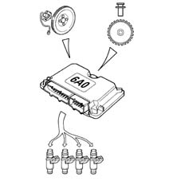
Applies to: all engines; all production periods; only with equipment: BIPOWER
IGNITION MANAGEMENT
The coil charge time and the ignition time in relation to TDC are always determined and managed by the basic electronic control unit, which receives the advance change to be applied from the METAFUEL unit, via CAN.
The METAFUEL unit contains an advance change value map based on engine speed and load. The advance correction calculation chain involves selection of a baseline value and its correction according to coolant temperature.
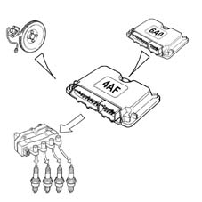
Applies to: all engines; all production periods; only with equipment: BIPOWER
INJECTION MANAGEMENT
The aim of fuel management is to deliver the amount of fuel required to meet performance and engine fuel consumption and emissions targets. The METAFUEL unit also manages the start-up stage.
Injection is phased, sequential.
The METAFUEL control unit uses an indirect engine load measurement system (speed-density) This method is used to calculate the amount of fuel to be injected into each cylinder for each engine cycle.
Methane is delivered by modulating injector opening time. Injector input pressure is governed by the pressure reduction unit.
The METAFUEL unit injection strategies allow the engine to be supplied with the correct amount of methane under all service conditions (acceleration, deceleration, altitude, cold).
Applies to: all engines; all production periods; only with equipment: BIPOWER
IDLE SPEED MANAGEMENT
Idle speed management (stepper management) is managed by the basic electronic unit. The METAFUEL unit alters idle speed by means of an offset sent via the CAN network to prevent engine stalling during returns and under load (e.g. power steering) due to the control of fuel alone by the METAFUEL unit.
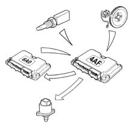
Applies to: all engines; all production periods; only with equipment: BIPOWER
SELF-ADAPTATION OF THE SYSTEM
Self-adaptive strategies allow the injection control to be adjusted to system shifts due to output dispersion and engine ageing.
Applies to: all engines; all production periods; only with equipment: BIPOWER
STARTING
The engine is always started using petrol.
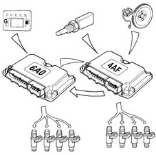
Applies to: all engines; all production periods; only with equipment: BIPOWER
ACCELERATION AND DECELERATION
These operational conditions are indicated by means of throttle and manifold pressure signals.
During these two stages, the METAFUEL unit adjusts fuel injection as quickly as possible to maximise acceleration torque and optimise handling during deceleration.
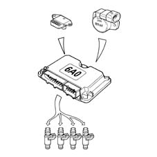
Applies to: all engines; all production periods; only with equipment: BIPOWER
OPERATION WITH CUT-OFF
The fuel cut-off strategy is implemented upon recognition of throttle closed with engine speed high. This strategy is enabled only above a given coolant temperature value. The METAFUEL electronic unit manages input and output from this stage to reduce emissions during this engine operating stage.
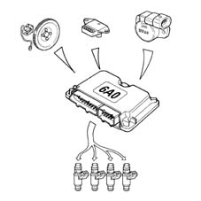
Applies to: all engines; all production periods; only with equipment: BIPOWER
OPERATION IN FULL LOAD CONDITIONS
Full-load service conditions are managed by the METAFUEL 6A0 electronic unit by means of air-CNG mixture enrichment strategies similar to those applied by petrol engine control systems.
Applies to: all engines; all production periods; only with equipment: BIPOWER
PROTECTION AGAINST EXCESS RPM
The METAFUEL electronic unit protects the engine against excess rpm. This protection involves cancelling injection times when a given speed value is exceeded. Normal injection is reset when speed returns to below critical levels.
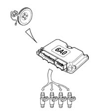
Applies to: all engines; all production periods; only with equipment: BIPOWER
BAROMETRIC CORRECTION
The METAFUEL control unit implements an altitude recognition and barometric correction strategy on the mixture concentration.
Applies to: all engines; all production periods; only with equipment: BIPOWER
FUEL VAPOUR RECOVERY
During methane operation, the fuel cylinder purge facility is carried out by the METAFUEL unit by sending the command to the base unit via the CAN line.
The methane fuel system is sealed. Fuel is present in gaseous form at each point of the circuit, from cylinder to injectors. Methane pressure in the section between cylinder and pressure adapter never exceeds maximum load pressure under any service conditions. Methane vapour recovery systems are not therefore required.
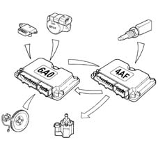
Applies to: all engines; all production periods; only with equipment: BIPOWER
CONTROL OF COMBUSTION GASES - LAMBDA SENSOR
The METAFUEL electronic unit uses a signal from the lambda sensor upstream of the catalytic converter to control metering of the air-methane mixture to obtain maximum conversion efficiency.
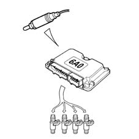
Applies to: all engines; all production periods; only with equipment: BIPOWER
AIR CONDITIONING COMPRESSOR CONNECTION
The METAFUEL electronic control unit is not connected to the air conditioning system.
Compressor activation and deactivation under certain operating conditions, to improve engine performance, are regulated by the basic electronic control unit using the same procedures and operating conditions as the basic system.
Applies to: all engines; all production periods; only with equipment: BIPOWER
RESIDUAL FUEL PRESSURE INDICATION
The METAFUEL electronic unit receives, from the CNG pressure sensor mounted on the pressure adapter, the signal indicating the residual pressure in the cylinders. This information is then sent from the METAFUEL control unit to the specific indicator located on the SEDIMO component.
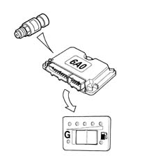
Applies to: all engines; all production periods; only with equipment: BIPOWER
SWITCHING BETWEEN THE TWO OPERATING MODES (PETROL AND GAS)
The function is regulated by the METAFUEL electronic control unit and by a switch integrated in the component (SEDIMO).
The position 'G' of the selector (1) indicates the user's choice to run the vehicle on CNG (green LED on) (2), the opposite position of the selector (1) indicates the user's choice to run the vehicle on petrol (yellow-amber LED on) (3). The residual pressure indicator is always active, irrespective of the operating mode.
The user can change between the two operating modes at any time.
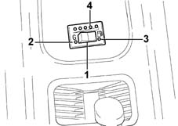
1 - Operating mode switch 2 - Green LED (CNG operation) 3 - Yellow-amber LED (petrol operation) 4 - Residual pressure indicator (1 yellow-amber LED for the reserve and 4 green LEDs)
Applies to: all engines; all production periods; only with equipment: BIPOWER
SWITCHING BETWEEN THE TWO OPERATING MODES (PETROL AND GAS)
The lighting strategy for the 'PETROL mode' indicator on the SEDIMO component indicates the following, regardless of the selector key position:
a) CNG operation = green LED on
b) Petrol operation = yellow-amber LED on.
To identify the 'cylinders empty' condition and so the automatic return to Petrol, the CNG pressure in the cylinders is taken into account. As a result of the cylinders being empty, the pressure in the rail rapidly descends to below a certain threshold.
Petrol --> Gas switching
The following options are possible:
1. Manual by the user with the engine off
Position of the selector key on starting: 'GAS mode'
The 'operating mode' LED comes on: yellow-amber LED relating to 'Petrol mode'.
When the engine starts, the yellow-amber LED relating to 'PETROL mode' is on, thus indicating that the engine is running on petrol. After starting (just past cranking), the fuel changes over to methane and the green LED relating to 'GAS mode' comes on.
The changeover to methane is inhibited if the gas pressure in the cylinder (detected by a specific sensor) is below a threshold corresponding to 'empty cylinders', if the coolant temperature is too low or if a fault to the system has been diagnosed (if applicable).
2. Manual by user with engine running
Initial position of selector key: 'Petrol mode'
'Operating mode' LED comes on: yellow-amber LED relating to 'Petrol mode'.
The user presses the selector key to start the Petrol --> Gas switching function, which takes place only when the following conditions are satisfied:
a) gas pressure in cylinder lower than a given threshold (value set to about 10 bars);
b) engine speed lower than a threshold;
c) no faults identified by the METAFUEL electronic unit diagnostic function.
Switching cannot take place until all the conditions are met.
After the changeover, the yellow-amber LED relating to 'PETROL mode' goes out and the green LED relating to the 'GAS mode' on the SEDIMO component comes on.
Gas --> Petrol switching
The following options are possible:
1. Automatic (with engine running)
Initial selector key position: 'GAS mode'
'Operating mode' LED comes on: green LED relating to 'GAS mode'.
Automatic Methane --> Petrol switching takes place when decided by METAFUEL unit control strategies and only if the following conditions are met:
a) gas pressure in cylinder (equivalent to fuel level) lower than a reserve threshold (value set to 10 bars);
b) System fault identification (where possible).
When one of the two conditions is satisfied, switching immediately takes place from Gas to Petrol and the 'PETROL mode' yellow-amber LED comes on on the SEDIMO component. The selector key position remains unchanged.
After switching, the methane Gas operating mode is inhibited completely until the condition that gave rise to the automatic switching has been eliminated (refuelling or fault eliminated).
2. Manual by user with engine running
Initial selector key position: 'GAS mode'
'Operating mode' LED initially comes on: yellow-amber LED relating to 'Petrol mode'.
The user presses the selector key to sart the Gas --> Petrol changeover function, which takes place immediately at the same time as the activation of the yellow-amber LED relating to the 'PETROL Mode' on the SEDIMO component.
Applies to: all engines; all production periods; only with equipment: BIPOWER
CONNECTION WTIH ELECTRONIC KEY
The METAFUEL control unit is not connected to the electronic key control unit (Fiat CODE).
The electronic key system keeps working only with the basic system; because all base unit functions are needed, except for injection management, even when running on methane, electronic key operation is guaranteed under all conditions. Start-up using a key not stored in the Fiat CODE control unit is not allowed in any operating mode (petrol or methane).
The vehicle customisation and key storage procedure remains the same and must be carried out in petrol mode.
Applies to: all engines; all production periods; only with equipment: BIPOWER
SYSTEM AUTODIAGNOSIS
The METAFUEL electronic unit tests input/output by cyclically checking characteristic signals and internal self-diagnosis. If faults are detected, it stores the codes in the EEPROM (passive self-diagnosis).
Individual actuators can also be activated by the tester to check their efficiency (active self-diagnosis).
The EEPROM memory is totally deleted by the tester.
Under fault conditions, the control unit manages alternative functions to keep the engine running sufficiently to enable the car to be taken back to the garage. In more severe cases, it automatically switches the system to petrol operating mode and turns off the indicator showing the residual pressure in the SEDIMO system (recovery).
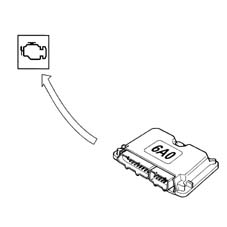
Applies to: all engines; all production periods; only with equipment: BIPOWER
FUEL PUMP CONTROL
The fuel pump is driven by the methane engine control unit by means of a relay.
The pump cuts out:
- if the engine speed goes below about 50 rpm
- after a certain period (about 5 seconds) with the ignition switch in the ON position without the engine being started up (timed enablement);
- if fuel/methane switching takes place;
- if the inertia switch has operated.
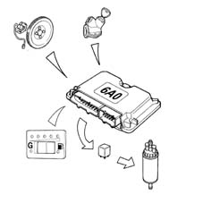
Applies to: all engines; all production periods; only with equipment: BIPOWER
GAS CUT-OFF SOLENOID CONTROL
The gas cut-off solenoid valves are operated by the engine management control unit by means of a relay.
The solenoid valves close:
- if the engine speed goes below about 50 rpm;
- after a certain period (about 5 seconds) with the ignition switch in the ON position without the engine being started up (timed enablement);
- if methane/fuel switching takes place;
- if the inertia switch has operated.
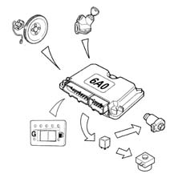
Applies to: all engines; all production periods; only with equipment: BIPOWER
METHANE INJECTORS CONTROL
The operatio of the CNG injectors is the sequential, phased type.
The timing of the injector operation varies according to the engine speed and pressure of the inlet air in order to improve the filling of the cylinders with advantages in terms of consumption, driveability and pollution.
The injectors are electrically supplied by means of a specific relay: the CNG engine management control unit closes the contacts for the section relating to the CNG injectors according to specific situations.
Applies to: all engines; all production periods; only with equipment: BIPOWER
PASSIVE AUTODIAGNOSIS
The METAFUEL 6A0 ECU tests for faults in inputs/outputs and the electronic unit by cyclically checking the characteristic signals and, in the case of malfunctions, memorizing the relative codes in the EEPROM (passive autodiagnosis). Tests carried out and recovery actions are reported in the case of faults in the following components:
Applies to: all engines; all production periods; only with equipment: BIPOWER
THROTTLE POSITION SENSOR
The METAFUEL 5D0 carries out the following electrical check every 0.32 s on the signal from the throttle position sensor:
- short-circuit to earth;
- short-circuit to vbattery or open circuit.
The control unit implements the following recovery actions if faults are detected:
- return to petrol operation and thus activation of the yellow-amber LED relating to 'PETROL mode' present on the SEDIMO component;
- activation of control panel warning light.
Applies to: all engines; all production periods; only with equipment: BIPOWER
METHANE PRESSURE SENSOR
The METAFUEL 6A0 control unit carries out the following electrical check every 0.1 s on the signal from the CNG pressure sensor:
- short-circuit to earth;
- short-circuit to battery or open circuit.
The control unit implements the following recovery actions if faults are detected:
- return to petrol operating mode and thus activation of the yellow-amber LED relating to 'PETROL Mode' present on the SEDIMO component;
- activation of control panel warning light.
The pressure indicator on the SEDIMO goes off.
Applies to: all engines; all production periods; only with equipment: BIPOWER
CAN LINE
The METAFUEL 6A0 control unit carries out a functional test on the CAN line cyclically to check for breaks in the connection.
In this case, the control unit carries out the following recovery actions:
- temporary return to petrol operation and thus activation of the 'PETROL mode' indicator on the control panel at each break. Return to CNG operation when the connection is restored, with deactivation of the 'PETROL mode' indicator on the control panel;
- final return to the petrol operating mode, and thus activation of the 'PETROL mode' indicator on the control panel, after 5 breaks on a single trip and activation of the warning light on the control panel.
Whenever there is a break in the connection on the CAN line, the test warning light on the instrument panel also comes on; once the connection has been re-established, the warning light goes out. After the communication has been interrupted five times, the warning light comes on and stays on permanently.
Applies to: all engines; all production periods; only with equipment: BIPOWER
PRECONVERTER LAMBDA SENSOR
The METAFUEL 6A0 carries out an operational check cyclically and indicates lambda sensor operation failure in the case of faults or malfunctions.
In this case, the control unit carries out the following recovery actions:
- disables closed loop concentration check;
- inhibits self-adaptive strategies.
Applies to: all engines; all production periods; only with equipment: BIPOWER
RPM SENSOR
The METAFUEL 6A0 checks the accuracy of pulse counts from the rpm sensor facing the 58-tooth toothed wheel and indicates the following in the case of faults or malfunctions:
- signal not plausible.
In this case, the control unit carries out the following recovery actions:
- return to petrol operating mode and thus activation of the yellow-amber LED relating to the 'PETROL mode' present on the SEDIMO component;
- activation of control panel warning light.
Applies to: all engines; all production periods; only with equipment: BIPOWER
TIMING SENSOR
The METAFUEL 6A0 tests the timing sensor cyclically and indicates the following in the case of faults or malfunctions:
- signal not plausible.
CNG operation only enabled.
Applies to: all engines; all production periods; only with equipment: BIPOWER
METHANE INJECTORS
The METAFUEL 6A0 carries out a cyclical check on the CNG injectors and indicates the following faults:
- open circuit on injector cold side;
- short-circuit of injectors to earth;
- short-circuit of injector cold side to vbattery.
In this case, the control unit carries out the following recovery actions:
- return to Petrol operating mode;
- activation of warning light on control panel.
Applies to: all engines; all production periods; only with equipment: BIPOWER
METHANE INJECTORS RELAY
The METAFUEL 6A0 electronic control unit carries out an electrical check on the CNG injector relay coil every 0.39 s and indicates the following faults:
- short circuit to earth or circuit open: this diagnosis is possible only in Petrol operating mode;
- short circuit to Vbattery: this diagnosis is only possible in CNG operating mode.
In this case, the control unit carries out the following recovery actions:
- return to Petrol operating mode;
- activation of warning light on control panel.
Applies to: all engines; all production periods; only with equipment: BIPOWER
CNG CUT-OFF SOLENOIDS RELAY
The METAFUEL 6A0 electronic control unit carries out an electrical check on the coil of the CNG cut-off solenoid relay every 0.39 s and indicates the following faults:
- short circuit to earth or open circuit: this diagnosis is possible only in Petrol operating mode;
- short circuit to Vbattery: this diagnosis is only possible in methane operating mode.
In this case, the control unit carries out the following recovery actions:
- return to Petrol operating mode;
- activation of warning light on control panel.
Applies to: all engines; all production periods; only with equipment: BIPOWER
FUEL PUMP CUT-OFF RELAY
The METAFUEL 6A0 electronic control unit carries out an electrical check on the PETROL pump cut-off relay coil every 0.39 s and indicates the following faults:
- short circuit to earth or open circuit: this diagnosis is conducted in CNG operating mode;
- short circuit to Vbattery: this diagnosis is possible in both CNG and Petrol operating mode.
CNG operation permitted only.
Applies to: all engines; all production periods; only with equipment: BIPOWER
METAFUEL 6A0 INJECTION CONTROL UNIT
The control unit is fitted under the windscreen bottom trim and can withstand high temperatures.
It is a digital type with a microprocessor, featuring a high calculation capacity, precision, reliability, versatility and low energy consumption and is maintenance-free.
The task of the electronic control unit is to process the signals coming from the various additional sensors belonging to the methane system and sensors shared with the petrol system through the application of software algorithms and to control the operation of the actuators (in particular the methane injectors and methane cut-off solenoids) in order to ensure optimum engine operation and to communicate with the IAW 4AF.G1 control unit via a high-speed CAN line.
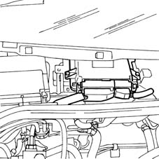
Applies to: all engines; all production periods; only with equipment: BIPOWER
METAFUEL 6A0 CONTROL UNIT PIN OUT
The diagram below shows the control unit pins.
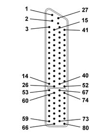
1, Direct supply from battery 2, External sensor power supply 3, Serial line K 4, Not connected 5, Not connected 6, Digital earth 7, Not connected 8, Signal input from Lambda sensor downstream of catalyzer (positive) 9, Not connected 10, GAS mode indicator 11, Timing sensor (positive) 12, Timing sensor (negative) 13, Not connected 14, Not connected 15, Not connected 16, External sensor power supply 17, Not connected 18, Not connected 19, Throttle position sensor (negative) 20, Signal input from Lambda probe downstream of catalyzer (negative) 21, Petrol mode indicator 22, Digital earth 23, CAN L line 24, Not connected 25, Not connected 26, Not connected 27, Battery earth direct return 28, Radio earth 29, Air temperature signal input 30, Methane pressure sensor signal 31, Not connected 32, Throttle position sensor (negative) 33, Absolute pressure sensor (negative) 34, Ignition-operated power supply (+15) 35, Converter lambda sensor signal (negative) 36, Not connected 37, Not connected 38, CAN H line 39, Not connected 40, Rpm sensor (negative) 41, Engine coolant temperature sensor 42, GAS level sensor 43, Throttle position sensor (postiive) 44, Absolute pressure sensor 45, Throttle position sensor (positive) 46, Preconverter lambda sensor signal (positive) 47, Operating mode selector input (petrol or methane) 48, CAN H second line 49, Not connected 50, Rpm sensor (positive) 51, VRS rpm sensor (positive) 52, VRS rpm sensor (negative) 53, Not connected 54, Methane cut-off solenoid relay control 55, Battery earth 56, Cylinder no. 4 injector 57, Cylinder no. 2 injector 58, Not connected 59, Methane injector power supply return (INJ+) 60, Methane level analogue signal output 61, Battery earth 62, Battery earth 63, Cylinder no. 3 injector 64, Cylinder no. 1 injector 65, Not connected 66, Methane injector power supply return 67, Not connected 68, Methane injector relay control 69, Not connected 70, Cylinder no. 4 injector 71, Cylinder no. 2 injector 72, Not connected 73, Not connected 74, Petrol pump deactivation relay control 75, Not connected 76, Battery earth 77, Cylinder no. 3 injector 78, Cylinder no. 1 injector 79, Not connected 80, Methane injector supply return (INJ+)
Applies to: all engines; all production periods; only with equipment: BIPOWER
CONSTRUCTION FEATURES
The specific methane injectors are the sonic type.
The main difference between these injectors and those which operate on petrol lies in the fact that they have a larger nozzle for the exit of the methane and they receive a considerably higher pressure (9 ± 1 bar). As a result, the quantity of methane injected only depends on the opening time of the injector (injection time) which is established by the CNG electronic control unit. As the pressure downstream of the injector is not influential, it is not necessary to fit the differential pressure regulator, as in petrol systems.
The control strategy for the injectors is the sequential, phased type, in other words the four injectors are operated individually according to the engine cylinder inlet sequence, whilst the supply for each cylinder which is already at the expansion stage, up until the inlet stroke already started.
The injectors are fixed by the methane distribution manifold, which presses them into their seats in the inlet ducts.
They are also secured to the methane distribution manifold by means of safety clips. Two rubber seals (1) and (2) ensure the seal at the inlet manifold and the methane distribution manifold.
The methane is supplied at the top (3) of the injector (top feed); the connector for the operation of the injector engages in the seat (4).
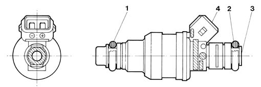
Applies to: all engines; all production periods; only with equipment: BIPOWER
CONSTRUCTION FEATURES
The methane distribution manifold (1) is fixed at the top part of the intake manifold. It receives methane at low pressure from the flexible pipe (2) which acts as a connection with the pressure reduction unit and distributes it to the four injectors (3).
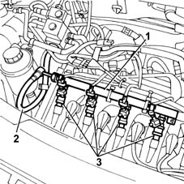
Applies to: all engines; all production periods; only with equipment: BIPOWER
METHANE PRESSURE SENSOR
The pressure sensor (1) is fitted on the pressure reduction unit (2), at the high pressure line (3) intake.
Applies to: all engines; all production periods; only with equipment: BIPOWER
CONSTRUCTION FEATURES
It is a capacitive type sensor (where the sensitive element is made from two gold-plated ceramic discs) which contains the signal conditioning circuit.
It receives a supply of 5V.
The measurement of the methane pressure at the high pressure line is designed to:
- indicate the quantity of methane in the cylinder (fuel gauge);
- provide an indication to the methane control unit for automatically switching the supply from methane to petrol if the methane pressure is too low (below 12 bar).
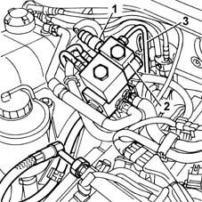
Applies to: all engines; all production periods; only with equipment: BIPOWER
CONSTRUCTION FEATURES
Electrical connections
Power supply: pin 16
Earth: pin 22
Signal: pin 30
Electrical characteristics
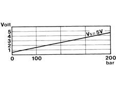